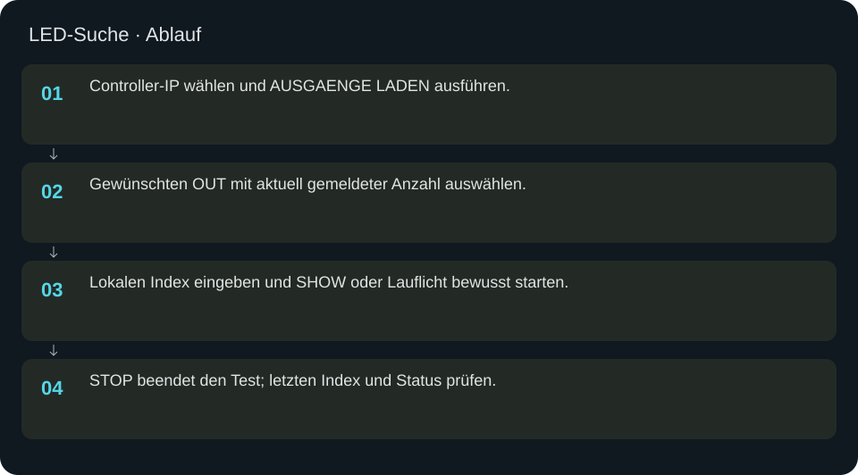
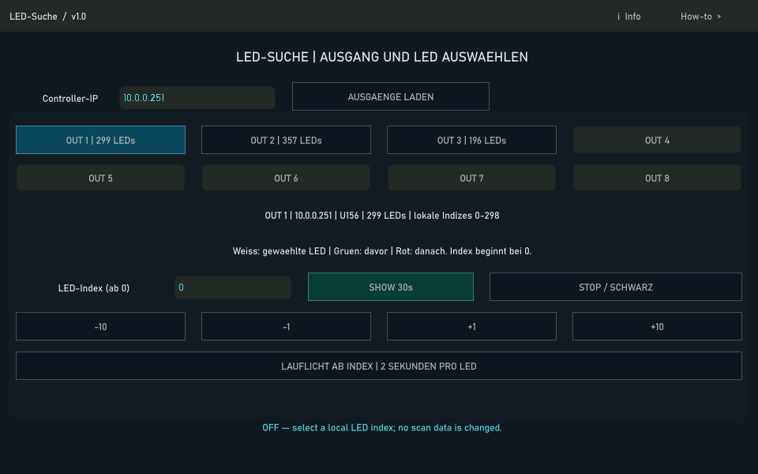

LED-Suche
Eine konkrete LED beziehungsweise ihre Nachbarn sichtbar machen und die Portlänge überprüfen.
In welcher Reihenfolge?
- Controller-IP wählen und AUSGAENGE LADEN ausführen.
- Gewünschten OUT mit aktuell gemeldeter Anzahl auswählen.
- Lokalen Index eingeben und SHOW oder Lauflicht bewusst starten.
- STOP beendet den Test; letzten Index und Status prüfen.


Schritt für Schritt
Beispiel Panel 8
Controller und OUT 1 mit 299 LEDs wählen. Index 298 entspricht der 299. LED. SHOW markiert die ausgewählte LED weiß und benachbarte LEDs farbig. Das ist eine echte Lichtausgabe und kein reiner UI-Test. Der Einzeltest endet spätestens nach 30 Sekunden; STOP kann ihn früher beenden.
Lauflicht
Das Lauflicht schreitet alle zwei Sekunden weiter. Bei der letzten tatsächlich sichtbaren LED STOP drücken und Index beziehungsweise Nummer festhalten. Der aktuelle Controllerframe wird vor dem Test neu geladen; andere Ports im gemeinsamen Frame bleiben schwarz.
Eingaben & Beispiele
| Feld | Bedeutung | Beispiel |
|---|---|---|
controller | IPv4 des Controllers; die Ausgangsliste wird live geladen. | 10.0.0.251 |
index | Lokaler Index ab 0; bei 299 LEDs sind 0–298 zulässig. | 298 |
Numerische Eingaben verwenden einen Punkt als Dezimaltrennzeichen. IPs, Pfade, Quellstarts und Universen zuerst mit der tatsächlichen Installation vergleichen.
Woran erkenne ich Erfolg?
Die erwartete Ansicht öffnet, Status und Vorschau entsprechen der gewählten Aktion, und es erscheint kein Fehler. Änderungen beim nächsten Laden beziehungsweise im Live-Status erneut lesen. Ein erfolgreicher Bildschirmtest beweist weder physische LED-Ausgabe noch korrekte Kameramessung.
Quellennachweis
Dateipfade im Projekt-Repository; die Onlinehilfe gibt keinen allgemeinen Dateisystemzugriff frei.
pixelblaze_mapper/led_search.pypixelblaze_mapper/led_search_ui.py
Dialog: /project1/guided_scan/led_search_panel